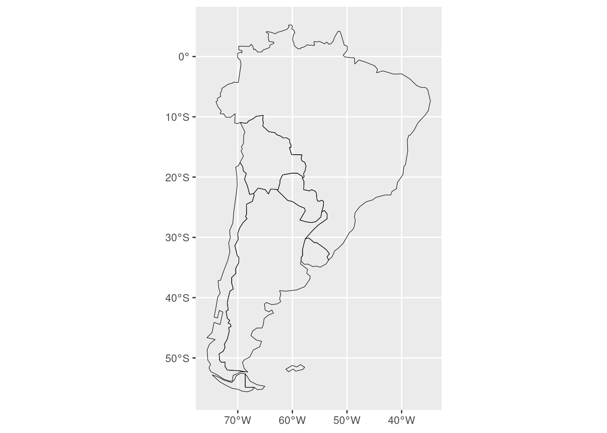
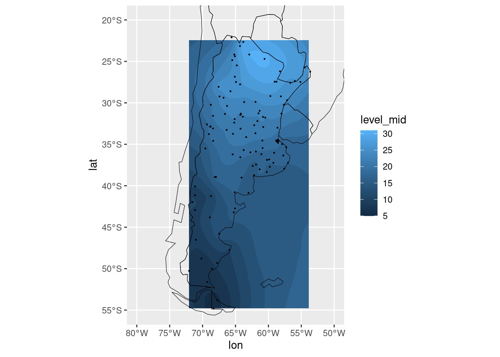
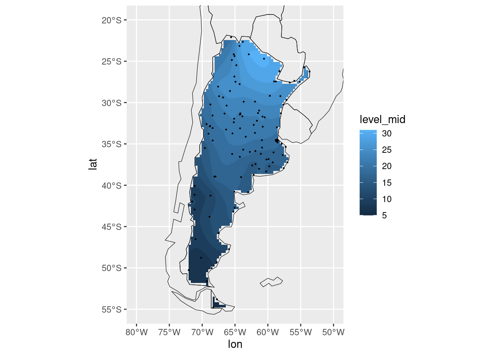

Hay dos grandes tipos de datos espaciales: grillas regulares y
grillas irregulares.
Grillas regulares
En la segunda sección de
lectura de datos viste cómo leer archivos NetCDF:
temperatura <- ReadNetCDF("datos/temperatura.nc", vars = "air",
subset = list(level = 1000,
lat = c(-55, -20),
lon = c(280, 310)))
glimpse(temperatura)
## Rows: 195
## Columns: 5
## $ time <dttm> 2010-07-09, 2010-07-09, 2010-07-09, 2010-07-09, 2010-07-09, 201…
## $ level <dbl> 1000, 1000, 1000, 1000, 1000, 1000, 1000, 1000, 1000, 1000, 1000…
## $ lat <dbl> -20.0, -20.0, -20.0, -20.0, -20.0, -20.0, -20.0, -20.0, -20.0, -…
## $ lon <dbl> 280.0, 282.5, 285.0, 287.5, 290.0, 292.5, 295.0, 297.5, 300.0, 3…
## $ air <dbl> 287.62, 287.70, 289.72, 293.25, 296.32, 297.30, 296.57, 296.15, …
La variable temperatura es una tabla que tiene dato de
temperatura del aire para cada tiempo, nivel (altura), latitud y
longitud. Como este archivo tiene información sólo para un tiempo y el
código filtró sólo datos de un nivel, entonces la variación es sólo en
latitud y longitud. ¿Cómo se grafica?
Se puede dibujar un punto por cada dato:
ggplot(temperatura, aes(lon, lat)) +
geom_point()
Esto no dice nada, aunque podemos confirmar que los datos están en
una grilla regular. Para visualizar la temperatura, hay que mapear éste
valor a un parámetro estético, por ejemplo, el color:
ggplot(temperatura, aes(lon, lat)) +
geom_point(aes(color = air))
Puntos redondos y separados no es la forma más informativa de ver
estos datos. Una grilla regular en realidad define como una “imagen”
donde cada punto es un pixel. Esto se llama un “raster” y con ggplot se
puede graficar con geom_raster().
ggplot(temperatura, aes(lon, lat)) +
geom_raster(aes(fill = air))
geom_raster() dibuja rectángulos de igual ancho y alto
en cada x, y. El ancho y el alto se definen a través de la resolución de
los datos. Funcionan perfectamente para grillas regulares. Estos
rectángulos tienen un color interno, por lo que el parámetro estético se
llama “fill”.
Desafío
ggplot2 tiene tres funciones para generar rectángulos:
geom_raster(), geom_tile() y
geom_rect(). ¿Cuál es la diferencia entre cada uno? Fijate
en la documentación.
Mapas
Bien, hasta ahí tenés un gráfico con los datos, pero para entenderlos
en su contexto espacial como mínimo hace falta un mapa. Para tener un
mapa se necesitan datos de la localización de las costas o las
fronteras. Existen varias fuentes de estos datos, pero una muy buena es
Natural Earth. El
paquete {rnaturalearth} provee una interfaz amigable para usar estos
datos directamente en {ggplot2}.
Primero hay que cargar el mapa que queramos. Por ejemplo, para
graficar el mapa de Argentina y sus países limítrofes cargamos los datos
con ne_countries():
mapa <- rnaturalearth::ne_countries(country = c("argentina", "chile", "uruguay",
"paraguay", "brazil", "bolivia",
"falkland islands"),
returnclass = "sf")
El argumento country es un vector con los países que
necesitamos. El argumento returnclass es un poco técnico,
pero hace referencia a la estructura que queremos que devuelva. En este
caso, returnclass = "sf" hace que devuelva un objeto de
clase “Simple Features”. Las “Simple Features” son cualquier cosa menos
simple internamente pero con {ggplot2} se pueden graficar con un geom
específico:
Por defecto, el mapa se dibuja con un fondo gris, pero el problema es
ese fondo va a tapar los datos! Paro para dibujar sólo los contornos hay
que modificarlo un poco:
ggplot(mapa) +
geom_sf(fill = NA, color = "black", size = 0.2)

Cuando uno usa mucho un mapa, muchas veces termina siendo útil
guardar el geom por separado en una variable.
mi_mapa <- geom_sf(data = mapa, inherit.aes = FALSE, fill = NA, color = "black", size = 0.2)
Además de las modificaciones estéticas, esta llamada a
geom_sf tiene el argumento data = mapa, ya que
no va a usar los datos “globales” de la llamada a ggplot().
También tiene ìnherit.aes = FALSE porque tampoco tiene que
“heredar” los aes globales.
Entonces ahora, para graficar la temperatura y el mapa encima,
armamos el gráfico de raster igual que antes y le sumamos el mapa:
ggplot(temperatura, aes(lon, lat)) +
geom_raster(aes(fill = air)) +
mi_mapa
Desafío
¿Podés explicar qué salió mal?
Existen dos convenciones básicas para medir la longitud, medida entre
0º y 360º o entre -180º y +180º. Los datos de temperatura usan la
primera y los del mapa, la segunda. Para convertir entre una y otra
convención, podés usar la función ConvertLongitude() de
{metR}:
temperatura <- mutate(temperatura, lon = metR::ConvertLongitude(lon, from = 360))
ggplot(temperatura, aes(lon, lat)) +
geom_raster(aes(fill = air)) +
mi_mapa
Lo único que le falta a este gráfico es lo que le sobra: todo el
espacio donde no hay datos. Para recortar el área del gráfico y que tome
sólo donde tenemos datos de temperatura, hay que especificar los límites
del sistema de coordenadas. Como mi_mapa es un
geom_sf, hay que usar coord_sf.
ggplot(temperatura, aes(lon, lat)) +
geom_raster(aes(fill = air)) +
mi_mapa +
coord_sf(ylim = c(-55, -20), xlim = c(-80, -50))
Otra forma de graficar datos espaciales es pensarlos como una
superficie tridimensional donde el x y el y son las coordenadas y la
altura (la coordenada z) es proporcional al valor de la variable.
Imaginándoselo así, este gráfico de temperatura sería una montaña con su
cima en Paraguay y su punto más bajo cerca de Chubut.
Precisamente para esta situación están pensadas las líneas de
contorno que se pueden graficar en {ggplot2} usando la función
geom_contour().
ggplot(temperatura, aes(lon, lat)) +
geom_contour(aes(z = air)) +
mi_mapa +
coord_sf(ylim = c(-55, -20), xlim = c(-80, -50))
Las líneas dibujadas por geom_contour() son líneas de
nivel que unen puntos de valor constante. Sin embargo, esas líneas
azules no dan ninguna indicación del valor de la variable por lo que es
conveniente mapear el color de las líneas ese valor constante.
ggplot(temperatura, aes(lon, lat)) +
geom_contour(aes(z = air, color = stat(level))) +
mi_mapa +
coord_sf(ylim = c(-55, -20), xlim = c(-80, -50))
¿De dónde salió ese stat(level)? Algunos geoms que
realizan transformaciones estadísticas computan variables nuevas que
luego se pueden mapear a parámetros geométricos. “level” es una de esas
variables computadas de geom_contour. Para decirle a ggplot
que al level al que te referís es a la variable computada, se rodea a la
variable con la función stat().
Una variedad de las líneas de contorno son las líneas “llenas”. Hasta
hace poco, {ggplot2} no tenía una forma de graficar estos contornos
llenos, así que está implementado en {metR} con la function
geom_contour_fill(). Recientemente {ggplot2} implementó la
función geom_contour_filled() pero a nosotros nos gusta más
la versi√≥n de {metR} üòâ
ggplot(temperatura, aes(lon, lat)) +
metR::geom_contour_fill(aes(z = air)) +
mi_mapa +
coord_sf(ylim = c(-55, -20), xlim = c(-80, -50))
Por último, tranquilamente se pueden usar ambos geoms para resaltar
los límites y
ggplot(temperatura, aes(lon, lat)) +
metR::geom_contour_fill(aes(z = air)) +
geom_contour(aes(z = air), color = "black") +
mi_mapa +
coord_sf(ylim = c(-55, -20), xlim = c(-80, -50))
Grillas irregulares
¿Qué pasa cuando en vez de observaciones organizadas en una bella
grilla regular, tenés observaciones puntuales en lugares dispersos? Si
te acordás de la sección de uniones, en la carpeta datos hay un archivo
con datos de temperatura del servicio meteorológico y metadatos con sus
ubicaciones. Esto define datos espaciales de temperatura.
# Para trabajar con menos datos, nos quedamos con la temperatura máxima media
# de cada estación.
observaciones <- readr::read_csv("datos/observaciones_smn.csv") %>%
group_by(station) %>%
summarise(tmax_media = mean(tmax, na.rm = TRUE))
estaciones <- read_csv("datos/estaciones_smn.csv")
observaciones <- left_join(observaciones, estaciones, by = c("station" = "nombre")) %>%
filter(provincia != "ANTARTIDA")
Lo primero que se puede hacer es graficar estos datos de estación con
puntos, de la misma forma que para los datos regulares.
ggplot(observaciones, aes(lon, lat)) +
geom_point(aes(color = tmax_media)) +
mi_mapa +
coord_sf(ylim = c(-55, -20), xlim = c(-80, -50))
Desafío
Graficá estos puntos usando geom_raster() y
geom_contour(). ¿Cuál es el resultado?
Como estos datos no están en una grilla regular,
geom_raster() y geom_contour() no los pueden
graficar. Para usar contornos hay que interpolar a una grilla regular.
Una forma de hacerlo es usando la técnica de kriging. Un paquete de
R que la implementa es {kriging} en su función kriging
Si vas a la ayuda de kriging(), vas a ver que requiere
un vector de coordenadas x, un vector de coordenadas y y un vector de
valores observados. Estos son las columnas lon,
lat y tmax_media de la tabla
observaciones. Entonces el código sería:
observaciones_regular <- kriging::kriging(x = observaciones$lon,
y = observaciones$lat,
response = observaciones$tmax_media)
## Error in onedim(response, n): NA/NaN/Inf in foreign function call (arg 1)
Este error indica que hay NAs, y kriging()
no funciona si hay valores faltantes. Lo que hay que hacer es omitirlos.
La función na.omit() elimina filas donde algún valor sea
NA.
## # A tibble: 115 × 6
## station tmax_media provincia lon lat altua
## <chr> <dbl> <chr> <dbl> <dbl> <dbl>
## 1 AEROPARQUE AERO 17.4 CAPITAL FEDERAL -58.4 -34.6 6
## 2 AZUL AERO 16.4 BUENOS AIRES -59.9 -36.8 147
## 3 BAHIA BLANCA AERO 16.0 BUENOS AIRES -62.2 -38.7 83
## 4 BARILOCHE AERO 8.63 RIO NEGRO -71.2 -41.2 835
## 5 BENITO JUAREZ AERO 15.6 BUENOS AIRES -59.8 -37.7 207
## 6 BERNARDO DE IRIGOYEN AERO 22.4 MISIONES -53.6 -26.2 815
## 7 BOLIVAR AERO 17.4 BUENOS AIRES -61.1 -36.2 94
## 8 BUENOS AIRES OBSERVATORIO 19.0 CAPITAL FEDERAL -58.5 -34.6 25
## 9 CAMPO DE MAYO AERO 18.8 BUENOS AIRES -58.7 -34.5 26
## 10 CATAMARCA AERO 25.1 CATAMARCA -65.8 -28.6 464
## # … with 105 more rows
Para no escribir na.omit(observaciones) tres veces
dentro de la llamada a krigin() se puede usar la función
with(). Esta función no es de {dplyr} pero funciona
parecido a summarise()/mutate() en que toma
como primer argumento una tabla y luego el código que pongamos se
entiende que hace referencia a las columnas de esa tabla.
Entonces, poniendo todo eso junto en una cadena:
observaciones_regular <- observaciones %>%
na.omit() %>%
with(kriging::kriging(lon, lat, response = tmax_media))
Desafío
¿Qué es lo que devolvió la función kriging()? Podés
mirar la documentación de la función (en la sección “Value”) o usando
glimpse(observaciones_regular).
observaciones_regular es una lista con muchos
elementos:
glimpse(observaciones_regular)
## List of 7
## $ model : chr "spherical"
## $ nugget : num -4.4
## $ range : num 11.9
## $ sill : num 26.9
## $ pixel : num 0.33
## $ map :'data.frame': 5544 obs. of 3 variables:
## ..$ x : num [1:5544] -72 -72 -72 -72 -72 ...
## ..$ y : num [1:5544] -54.8 -54.5 -54.1 -53.8 -53.5 ...
## ..$ pred: num [1:5544] 8.94 8.74 8.55 8.38 8.24 ...
## $ semivariogram:'data.frame': 10 obs. of 2 variables:
## ..$ distance : num [1:10] 0.685 1.943 3.143 4.41 5.628 ...
## ..$ semivariance: num [1:10] 0.555 2.139 3.295 5.659 8.877 ...
## - attr(*, "class")= chr "kriging"
La mayoría de los elementos brindan información detallad sobre los
parámetros usados y computados para realizar la interpolación. El
elemento útil es el que se llama map, que tiene los datos
interpolados. ¿Qué es lo que tiene map?
glimpse(observaciones_regular$map)
## Rows: 5,544
## Columns: 3
## $ x <dbl> -72.05, -72.05, -72.05, -72.05, -72.05, -72.05, -72.05, -72.05, -…
## $ y <dbl> -54.80000, -54.46970, -54.13939, -53.80909, -53.47879, -53.14848,…
## $ pred <dbl> 8.938263, 8.740744, 8.554452, 8.379149, 8.240792, 8.154581, 8.111…
Es una tabla con columnas, “x”, “y” y “pred”, que representan las
coordenadas horizontales y los valores interpolados. Estos nombres no
son muy descriptivos; se pueden cambiar con rename.
Entonces este código extrae el elemento map de la lista
observaciones_regular, le cambia el nombre a las variables
y asigna el resultado a observaciones_regular
observaciones_regular <- observaciones_regular$map %>%
rename(lon = x, lat = y, tmax_media = pred)
Y esto, como es una grilla regular, se puede graficar con cualquiera
de las técnicas anteriores. Dado que
esto es una interpolación, es buena costumbre, además, indicar con
puntos las coordenadas de las observaciones usadas para realizarla.
ggplot(observaciones_regular, aes(lon, lat)) +
geom_contour_fill(aes(z = tmax_media)) +
geom_point(data = observaciones, size = 0.2) +
mi_mapa +
coord_sf(ylim = c(-55, -20), xlim = c(-80, -50))

Este mapa se puede mejorar. En particular, la interpolación en el Mar
Argentino, a miles de kilómetros de cualquier observación, no tiene
ningún sentido. Para controlar el dominio en el cual se realiza la
interpolación hay que usar el argumento polygons de
kriging(). Ahí, hay que poner puntos en x e y que definan
el polígono dentro del cual se va a hacer la interpolación. ¿De dónde
sacás un pol√≠gono con el contorno de Argentina? ü§î. ¬°Lo estás mirando!
Es nuestro mapa.
La función fortify() de {ggplot2} genera polígonos a
partir de la salida de {rnaturalearth}. De esos polígonos hay que
seleccionar únicamente las coordenadas de longitud y latitud, y al mismo
tiempo, renombrarlas como x e y para que kriging() las
entienda. Finalmente, hay que meter todo eso en una lista.
poligonos_arg <- rnaturalearth::ne_countries(country = "argentina") %>%
fortify() %>%
select(x = long, y = lat) %>%
list()
Ahora, hay que repetir todo lo anterior, pero usando con
polygons = poligonos_arg.
observaciones_regular <- observaciones %>%
na.omit() %>%
with(kriging::kriging(lon, lat, response = tmax_media, polygons = poligonos_arg))
observaciones_regular <- observaciones_regular$map %>%
rename(lon = x, lat = y, tmax_media = pred)
ggplot(observaciones_regular, aes(lon, lat)) +
geom_contour_fill(aes(z = tmax_media)) +
geom_point(data = observaciones, size = 0.2) +
mi_mapa +
coord_sf(ylim = c(-55, -20), xlim = c(-80, -50))

Desafío
La interpolación de este gráfico queda fea en los bordes porque tiene
poca resolución. ¿Qué hay que cambiar en la llamada a
kriging() para incrementarla? Fijate en la documentación de
la función.
Este gráfico tiene lo básico, pero se le puede poner un poco de amor
para que quede mejor. Se le puede agregar líneas de contorno en negro
para resaltar los contornos, cambiar la escala de colores para que
evoque más la idea de “temperatura máxima”, agregar etiquetas a los
contornos y modificar el texto de los ejes y las escalas. Haciendo todo
eso, podemos llegar a algo como esto.
ggplot(observaciones_regular, aes(lon, lat)) +
geom_contour_fill(aes(z = tmax_media)) +
geom_contour2(aes(z = tmax_media), size = 0.2) +
geom_text_contour(aes(z = tmax_media), skip = 1,
rotate = FALSE, size = 3.5,
stroke = 0.1, color ="white", stroke.color = "black") +
geom_point(data = observaciones, size = 0.2) +
mi_mapa +
scale_fill_distiller(palette = "YlOrRd", direction = 1) +
coord_sf(ylim = c(-55, -20), xlim = c(-80, -50)) +
labs(fill = "Temperatura (ºC)",
x = NULL,
y = NULL) +
theme_minimal()
Vas av er un poco más sobre la apariencia de los gráficos en la
siguiente sección.
